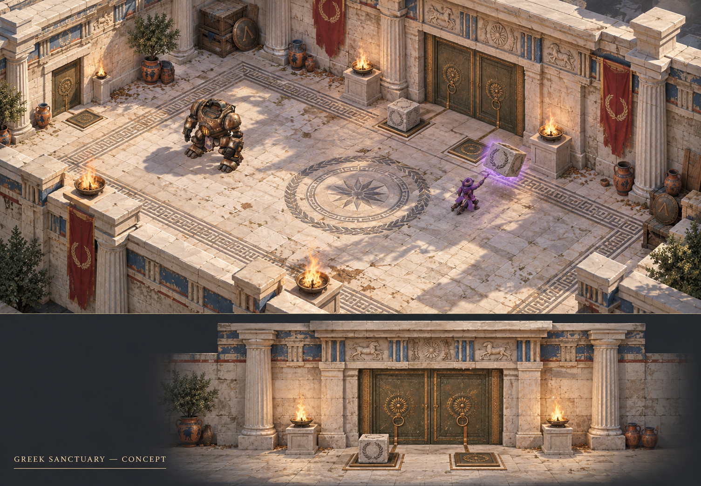

Ελληνικό ιερό και πύλες τηλεκίνησης
Η νέα κατεύθυνση αντικαθιστά το γοθικό ύφος: ανοιχτόχρωμη φθαρμένη πέτρα, ραβδωτές κολόνες, λίθινα υπέρθυρα και ανάγλυφες μετόπες. Κάθε είσοδος ενώνεται με τη συνεχή τοιχοποιία, ώστε η κλειστή πόρτα να φράζει ολόκληρο το πέρασμα.

Το πρώτο λειτουργικό δείγμα
Δύο πλάκες, δύο βάρη
Μία δίφυλλη πόρτα ανοίγει όταν πατηθούν ταυτόχρονα και οι δύο πλάκες από διαφορετικά βάρη. Τα βάρη μεταφέρονται με τηλεκίνηση, είναι άφθαρτα και επιστρέφουν σε ασφαλή θέση αν χαθούν εκτός χώρου.
Κρυφό δωμάτιο
Μία μονή πόρτα και μία διακριτική πλάκα, με ένα βάρος. Τα γλυπτά και οι αρμοί της πέτρας δίνουν οπτικό στοιχείο χωρίς να κάνουν την είσοδο προφανή.
Φλόγα του HEARTH
Σε επιλεγμένα σημεία, ενισχυμένες ξύλινες πόρτες απαιτούν τη φλόγα του engine. Η διαδρομή μέχρι την απόκτησή του πρέπει να λύνεται με τις δυνατότητες του μάγου.
Εναλλαγή ρυθμού
Ανοιχτά περάσματα ανάμεσα στους γρίφους. Ο παίκτης μπορεί να βγει από το HEARTH, να τοποθετήσει βάρη, να ξαναμπεί και να προχωρήσει. Παραλλαγές πλάκας και μοχλού θα μπουν επιλεκτικά.
Κρίσιμοι έλεγχοι
- Καμία παράκαμψη από κενό δίπλα στην πόρτα και καμία αόρατη σύγκρουση όταν ανοίγει.
- Ασφαλής διέλευση μάγου και HEARTH, χωρίς κλείσιμο πάνω τους.
- Προσβάσιμα βάρη και σωστή διαδρομή για κάθε πιθανό δωμάτιο εμφάνισης του engine.
- Πραγματική δοκιμή τηλεκίνησης, φλόγας, navigation, desktop/touch χειρισμών και απόδοσης.
Αρχιτεκτονικές αναφορές: Παρθενώνας και δωρική αρχιτεκτονική, γλυπτός διάκοσμος του Παρθενώνα. Η εικόνα δημιουργήθηκε με το ενσωματωμένο imagegen ως πρωτότυπη πρόταση για το MAGIC. Τα τελικά 3D assets θα αξιολογηθούν χωριστά· προτεραιότητα στα κατάλληλα έτοιμα μοντέλα.